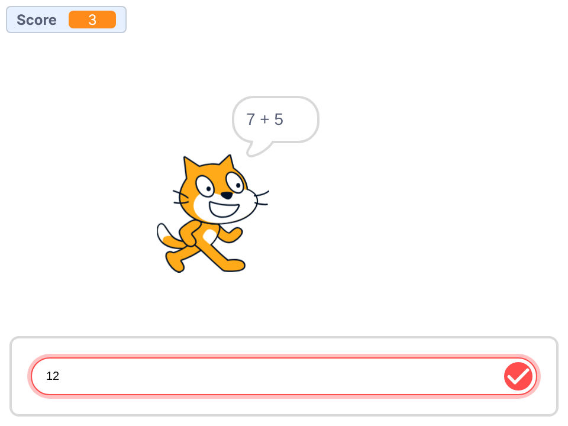

Scratch · Today's test

Math Cat · Everyone together
Capital letters: Score, A and B. In each orange block, click the little arrow to pick the right variable.
Math Cat · Missions 1 and 2
When the green flag is clicked: set Score to 0. Then, forever: set A to pick random 1 to 10, and set B to pick random 1 to 10.
BLOCKS YOU NEED
when flag clicked
set [Score v] to (0)
forever end
set [A v] to (0)×2
(pick random (1) to (10))×2
Test it: click the green flag. A and B change super fast on the stage.
Inside the forever, under the two sets: ask the sum and wait. Put a join inside a join: A, then “ + ” (a space each side), then B.
BLOCKS YOU NEED
ask [ ] and waitNEW
(join [ ] [ ])×2
(A)
(B)
Test it: the cat asks a sum, like 7 + 5. Type anything and press Enter.
Click the green flag after every mission. Stuck? Try for 3 minutes, then raise your hand.
Math Cat · Missions 3 and 4
Under the ask: if the answer = A + B, change Score by 1 and say Correct! for 1 second.
BLOCKS YOU NEED
if <> then end
<[ ] = [ ]>
(answer)NEW
(( ) + ( ))
change [Score v] by (1)
say [Correct!] for (1) seconds
Test it: answer right. Score goes up by 1.
Under that if, a second if: if not (answer = A + B), say join “It was ” and A + B, for 1 second.
BLOCKS YOU NEED
if <> then end
<not <>>
<[ ] = [ ]>
(answer)
(( ) + ( ))×2
say [ ] for (1) seconds
(join [It was ] [ ])
Test it: answer wrong. The cat tells you the right answer.
Click the green flag after every mission. Stuck? Try for 3 minutes, then raise your hand.
Math Cat · Missions 5 and 6
A second script on the cat. When the green flag is clicked, forever: set x to (Score * 30) - 150. Put the * block inside the - block.
BLOCKS YOU NEED
when flag clicked
forever end
set x to (0)
(( ) - (150))
(( ) * (30))
(Score)
Test it: every right answer, the cat walks 30 steps right.
At the bottom of the first script's forever: if Score > 9, say You win! for 2 seconds, then stop all.
BLOCKS YOU NEED
if <> then end
<( ) > (9)>
say [You win!] for (2) seconds
stop [all v]
Test it: get 10 right. The cat wins and everything stops.
All six work? Try these: pick random 1 to 20 · make it times: * instead of + in all three places, and “ x ” in the join · start sound Meow when you're right · a 60-second countdown on the Stage, like Shark Chase
Math Cat · The code · Last 10 minutes
when flag clicked
set [Score v] to (0)
forever
set [A v] to (pick random (1) to (10)) // Mission 1 · Pick
set [B v] to (pick random (1) to (10))
ask (join (A) (join [ + ] (B))) and wait // Mission 2 · Ask
if <(answer) = ((A) + (B))> then // Mission 3 · Right!
change [Score v] by (1)
say [Correct!] for (1) seconds
end
if <not <(answer) = ((A) + (B))>> then // Mission 4 · Wrong
say (join [It was ] ((A) + (B))) for (1) seconds
end
if <(Score) > (9)> then // Mission 6 · Win
say [You win!] for (2) seconds
stop [all v]
end
endwhen flag clicked forever set x to (((Score) * (30)) - (150)) // Mission 5 · Walk end
For the teacher: this is the whole game. Both scripts go on the cat (Sprite1), and each starts with its own green flag. The next three slides show each part up close: go through them one at a time, and ask the class what each green block does. Then everyone fixes their own game.
Math Cat · The code up close
when flag clicked set [Score v] to (0) forever set [A v] to (pick random (1) to (10)) set [B v] to (pick random (1) to (10)) ask (join (A) (join [ + ] (B))) and wait end
Math Cat · The code up close
These two ifs go inside the forever, right under the ask.
if <(answer) = ((A) + (B))> then change [Score v] by (1) say [Correct!] for (1) seconds end if <not <(answer) = ((A) + (B))>> then say (join [It was ] ((A) + (B))) for (1) seconds end
Math Cat · The code up close
Mission 5 · a second script on the cat
when flag clicked forever set x to (((Score) * (30)) - (150)) end
Mission 6 · at the bottom of the first script's forever
if <(Score) > (9)> then say [You win!] for (2) seconds stop [all v] end
| Score | Score * 30 | - 150 | The cat is |
|---|---|---|---|
| 0 | 0 | -150 | on the left |
| 5 | 150 | 0 | in the middle |
| 10 | 300 | 150 | on the right |
Math Cat · Time's up
Please don't show the next group your game. They're taking the same test.